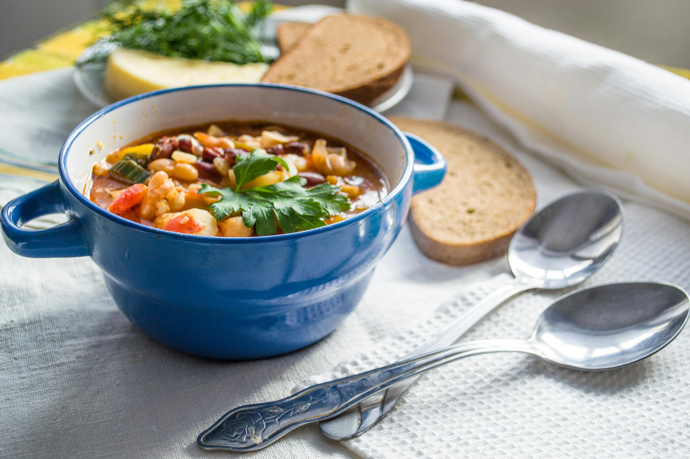

Favorite Recipes
Home
About
Recipes
Gallery
Blog
Contact
Back
Forward
Hearty Vegetable Bean Soup

Ingredients
1 can white beans
1 can kidney beans
2 carrots, chopped
1 cup diced tomatoes
Steps
Sauté carrots and onions.
Add beans and tomatoes.
Simmer for 30 minutes.